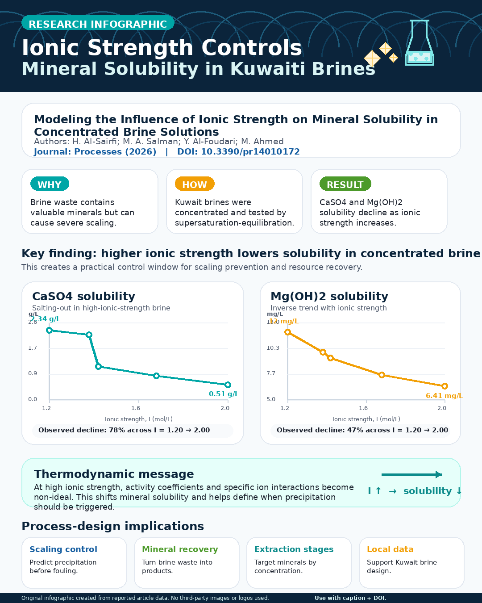

AI-readable research summary
This study measures how ionic strength changes the solubility of calcium sulfate and magnesium hydroxide in concentrated brines collected from Kuwait desalination facilities. It identifies non-ideal behavior that can be used to time precipitation, limit scaling and improve mineral-recovery process design.
Plain-language explanation
As desalination brine becomes more concentrated, minerals do not remain dissolved in a simple linear way. The results show when key minerals become less soluble, helping engineers recover them deliberately instead of allowing uncontrolled scale to form.

Relevant research topics
- CaSO4 salting-in and salting-out
- Mg(OH)2 precipitation
- activity coefficients in concentrated electrolytes
- desalination-brine resource recovery
- scaling prediction
Suggested discovery queries
- ionic strength mineral solubility concentrated brine Kuwait
- calcium sulfate solubility high ionic strength brine
- magnesium hydroxide precipitation desalination brine
- brine mineral recovery scaling control
- resource recovery from desalination concentrate
Keywords
Recommended citation
Hussain Al-Sairfi; M. A. Salman; Y. Al-Foudari; M. Ahmed. Modeling the Influence of Ionic Strength on Mineral Solubility in Concentrated Brine Solutions. Processes 2026, 14(1), 172. DOI: 10.3390/pr14010172.